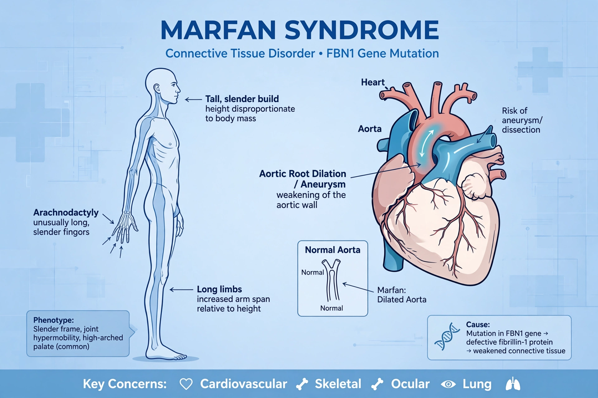

Marfan syndrome is a genetic disorder affecting connective tissue, caused by mutations in the FBN1 gene encoding fibrillin-1. People are typically tall and thin with long limbs, fingers, and toes.

| Gene | FBN1 (fibrillin-1) |
|---|---|
| Inheritance | Autosomal dominant |
| Named after | Antoine Marfan |
Features include arachnodactyly, scoliosis, pectus deformities, lens dislocation (ectopia lentis), myopia, and dilation of the aortic root, which can lead to aortic dissection — the most serious complication.
There is no cure; treatment includes beta blockers or angiotensin receptor blockers to slow aortic dilation, regular echocardiography, and prophylactic aortic surgery when the root reaches dangerous size.